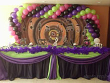
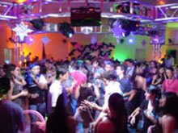
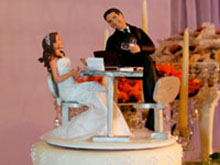
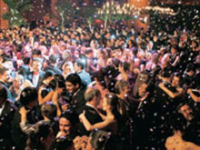

Aniverssários |
Aniverssários
Você elabora mas o Buffet Ana Maria executa sua festa, assim você tem tempo para abrir todos os presentes. Seja em nosso espaço ou em sua residência , o Buffet Ana Maria elabora e apresenta propósta personalizadas e acompanha os serviços
contratados do inicio ao fim, garantindo que sua comemoração surpreendam as expectativas de todos.
|  |
| Debutantes |
Debutantes
Completar 15 anos é mais do que especial, é inesquecivel. E você tem a chance de realizar a festa dos seus sonhos, a melhor
balada da sua vida. Divirta-se a noite inteira, dance com aquelas pessoas especiais. Compartilhe a felicidade ao lado da sua
familia, dos seus melhores amigos e da turma da escola, Curta esse grande momento da sua vida . Deixe que o Buffet Ana Maria
transforme seu sonho em realidade.
|  |
Casamentos |
Casamentos
Nosso Compromisso é tornar único este momento que é o mais belo e inesquecivel de sua vida. No Buffet Ana Maria, cada detalhe é planejado para personalizar e concretizar o seu sonho originalidade, prazer e glamour. No Jardim, ao ar livre e junto à natureza, pode ser realizado o coquetél de boas-vindas ou a cerimônia civil e religiosa. O Buffet Ana Maria sabe tornar tudo perfeito.
|  |
| Formaturas |
Formaturas
Deixe que o Buffet Ana maria faça a "farra" de sua turma. O Buffet Ana Maria elabora os melhores menus, indica os melhores presstadores de serviço e acompanha
tudo do começo ao fim para que sua formatura seja ralizada com sucesso e feche seu processo estudantil com chave de ouro.
|  |